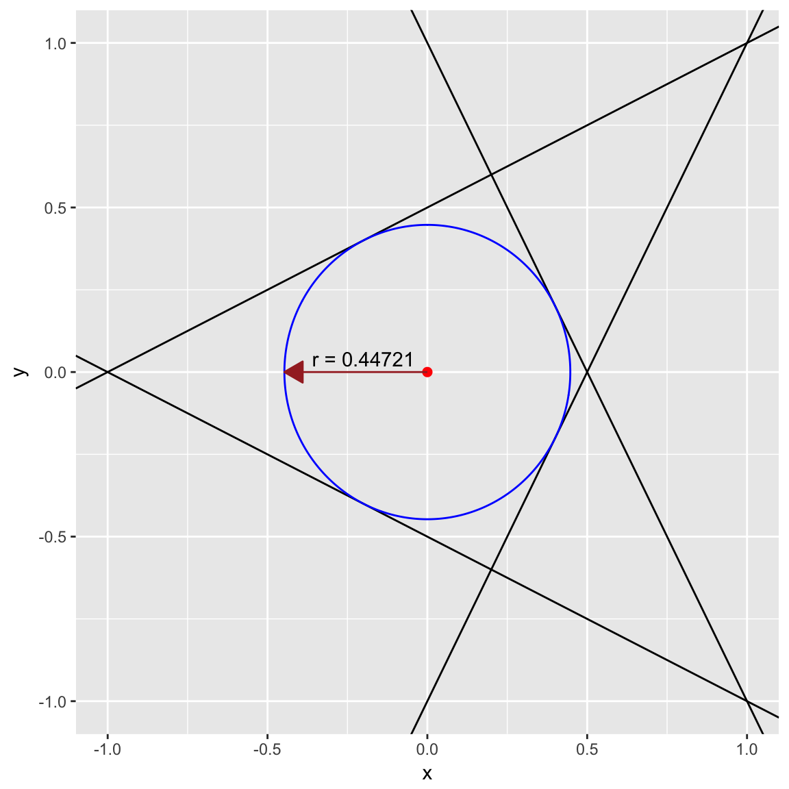

Largest Ball in a Polyhedron in 2D
Problem
The following is a problem from Boyd and Vandenberghe (2004), section 4.3.1.
Find the largest Euclidean ball (i.e. its center and radius) that lies in a polyhedron described by affine inequalites:
\[ P = {x : a_i'*x <= b_i, i=1,...,m} \]
where x is in \({\mathbf R}^2\).
We define variables that determine the polyhedron.
a1 <- matrix(c(2,1))
a2 <- matrix(c(2,-1))
a3 <- matrix(c(-1,2))
a4 <- matrix(c(-1,-2))
b <- rep(1,4)Next, we formulate the CVXR problem.
suppressMessages(suppressWarnings(library(CVXR)))
r <- Variable(name = "radius")
x_c <- Variable(2, name = "center")
obj <- Maximize(r)
constraints <- list(
t(a1) %*% x_c + p_norm(a1, 2) * r <= b[1],
t(a2) %*% x_c + p_norm(a2, 2) * r <= b[2],
t(a3) %*% x_c + p_norm(a3, 2) * r <= b[3],
t(a4) %*% x_c + p_norm(a4, 2) * r <= b[4]
)
p <- Problem(obj, constraints)All that remains is to solve the problem and read off the solution.
result <- solve(p)
radius <- result$getValue(r)
center <- result$getValue(x_c)
cat(sprintf("The radius is %0.5f for an area %0.5f\n", radius, pi * radius^2)) ## The radius is 0.44721 for an area 0.62832A Plot
library(ggplot2)
library(ggforce)
ggplot() +
geom_abline(slope = -a1[1] / a1[2], intercept = b[1] / a1[2]) +
geom_abline(slope = -a2[1] / a2[2], intercept = b[2] / a2[2]) +
geom_abline(slope = -a3[1] / a3[2], intercept = b[3] / a3[2]) +
geom_abline(slope = -a4[1] / a4[2], intercept = b[4] / a4[2]) +
geom_circle(mapping = aes(x0 = center[1], y0 = center[2], r = radius), color = "blue") +
geom_point(mapping = aes(x = center[1], y = center[2]), color = "red", size = 2) +
labs(x = "x", y = "y") +
xlim(-1, 1) + ylim(-1, 1)
References
Boyd, S., and L. Vandenberghe. 2004. Convex Optimization. Cambridge University Press.